
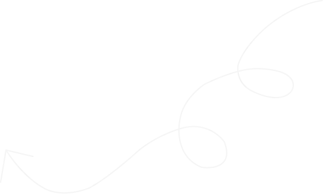
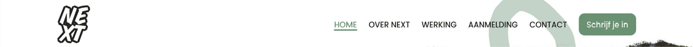
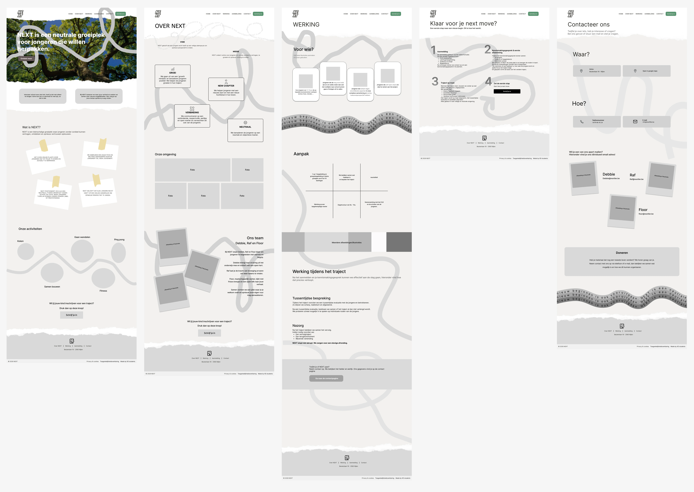

NEXT — Branding en Websiteontwerp
Voor Project NEXT werkte ik in teamverband aan een complete branding, logo-ontwerp en websiteconcept voor een organisatie die jongeren van 13 tot 19 jaar ondersteunt.
In deze case study vertaalden we de identiteit van NEXT naar een overzichtelijke informatiearchitectuur, wireframes, een Bludit-implementatie en een goedgekeurd logo.
De opdracht
NEXT was een startende organisatie en had nood aan een duidelijke visuele identiteit en website. De site moest uitleggen wat NEXT doet, voor wie de organisatie er is, hoe een traject verloopt en hoe jongeren kunnen worden aangemeld.
De uitdaging was om voldoende informatie te bieden aan jongeren, ouders, scholen en CLB-medewerkers zonder de website te formeel of tekstzwaar te maken. Daarom combineerden we duidelijke secties en call-to-actions met foto’s, post-its, quotes en golvende lijnen.
Tijdlijn van het Project NEXT
Research en kennismaking
We maakten kennis met NEXT via een rondleiding op video en een uitgebreide infobrochure. Die bronnen gaven ons inzicht in de omgeving, doelgroep, waarden, werking en het team.
We verdeelden de inhoud vervolgens over logische pagina’s: werking, over NEXT, team en aanmelding. Tijdens onze eerste presentatie kregen we belangrijke feedback: de visuele richting voelde te rustig aan en mocht meer kracht uitstralen.
Onze groep maakte daarnaast een moodboard, een eerste branding, een navigatiestructuur, een Brief of Concept en een offerte. Deze onderdelen presenteerden we aan NEXT. Tijdens deze presentatie kregen we belangrijke feedback over de visuele richting.


Eerste visuele richting
Onze eerste richting vertrok vanuit de rustige, groene omgeving van NEXT. We werkten met lichte natuurlijke kleuren en een klavertjevier als symbool voor geluk, kansen en groei.
De klant vond de basis warm en passend, maar miste energie en kracht. Die feedback werd een belangrijk keerpunt: we behielden het natuurlijke karakter, maar zochten meer contrast en visuele impact.
Branding & logo
Na de feedback testten we verschillende kleurenpaletten, typografische richtingen en logo-ideeën. Uiteindelijk kozen we voor een natuurlijke basis met een donkerdere groentint, zodat de branding warmer én krachtiger aanvoelt.
Ook het logo doorliep verschillende iteraties. We testten verschillende lettertypes, kleurcombinaties en letterplaatsingen. Naast typografische variaties onderzochten we ook symbolische richtingen, zoals een vuist, vuur en een pijl die in één van de letters verwerkt kon worden. Na meerdere meetings en feedbackmomenten kozen we uiteindelijk voor een typografisch logo waarin de letters van NEXT als herkenbaar geheel worden opgebouwd.
Deze slogan vond Debbie bijzonder sterk, omdat hij de kern van NEXT samenvat: jongeren krijgen er de mogelijkheid om even opnieuw te beginnen, zonder dat dit betekent dat ze stilstaan. Het logo en de slogan werden door NEXT goedgekeurd. De organisatie liet later weten dat ze het logo ook op hun toekomstige website wil gebruiken en ons daarvoor credit zal geven.
Informatiearchitectuur
Samen met NEXT verfijnden we de navigatiestructuur. We gaven “Ons team” een eigen pagina en verdeelden de inhoud over zes hoofdonderdelen:
- Home
- Over NEXT
- Werking
- Aanmelding
- Ons team
- Contact
Op elke pagina plaatsten we een duidelijke call-to-action naar het aanmeldformulier. Zo blijft de belangrijkste actie steeds bereikbaar, ook wanneer bezoekers via een andere pagina binnenkomen.

Wireframes & iteraties
We gebruikten wireframes om inhoud, layout en informatiehiërarchie te onderzoeken voordat we het visuele ontwerp uitwerkten. De feedback van docenten richtte zich vooral op structuur en layout, terwijl NEXT inhoudelijke keuzes en pagina-indeling beoordeelde.
Na meerdere iteraties verfijnden we onder meer de homepagina, de werking en de aanmeldingsflow. Pas toen de structuur voldoende duidelijk was, gingen we verder met de high-fidelity designs.
Iteratie 1

Iteratie 5

High-fidelity design
In Figma werkten we vier mogelijke kleurenpaletten uit. NEXT koos uiteindelijk voor de groene richting met een donkerdere groentint, die de gewenste kracht aan de warme basis toevoegde.
We gebruikten golvende lijnen, foto’s, post-its, polaroids en kaarten om de website persoonlijk en minder formeel te maken. Visuele onderbrekingen hielden vooral de inhoudsrijke pagina “Werking” overzichtelijk.
Implementatie in Bludit
Na de ontwerpfase bouwden we de website in Bludit. Ik implementeerde de pagina “Over NEXT” en werkte mee aan de contactpagina, waardoor ik mijn Figma-ontwerp ook naar een werkende webpagina vertaalde.
De liveversie maakte duidelijk dat responsieve implementatie nog aandacht nodig had: op mobiel viel tekst soms buiten de post-its. Ook zorgden de vele foto’s voor trage laadtijden. Daarom toon ik in mijn portfolio vooral kwalitatieve screenshots van het ontwerp.
Feedback en finale selectie
Tijdens verschillende presentaties verwerkten we feedback van NEXT en de docenten. We scherpten de visuele identiteit, navigatie, inhoudelijke verdeling en informatiehiërarchie telkens verder aan.
In totaal maakten we ongeveer negen iteraties in Figma. NEXT selecteerde uiteindelijk onze groep uit vier teams, omdat we de inhoud zorgvuldig hadden verwerkt, veel werk hadden geïnvesteerd en zichtbaar hadden bijgestuurd na feedback.